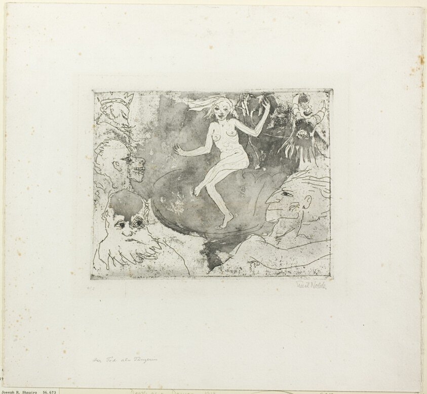

Death as a Dancer
Emil Nolde · 1918 · Etching and aquatint on white wove paper · plate 20.9 × 26.3 cm · Art Institute of Chicago
In copyright. Look and learn: shown for study, not for download.
Nolde made this etching and aquatint in 1918; the impression is the second state. Under the Nazis, 1,052 of his works were removed from German museums, more than those of any other artist, and some hung in the Degenerate Art exhibition of 1937, though he was himself a member of the Nazi Party. After 1941 he was not allowed to paint, even in private, and made hundreds of watercolours he called the Unpainted Pictures. He died at Seebüll in 1956.